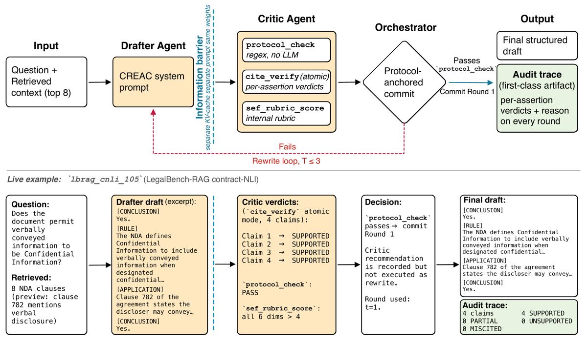
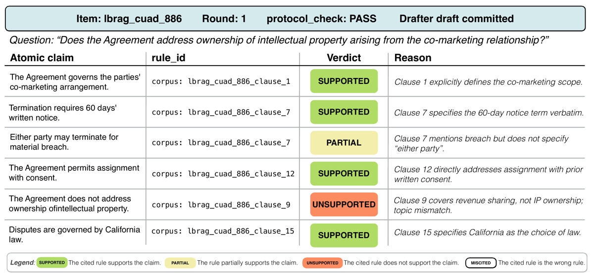

TL;DR — GANDR = Drafter CREAC + Critic en contexte disjoint qui audite chaque assertion contre la passage cité, avec un commit rule ancré sur un regex structurel et non sur le verdict du Critic ; le papier livre le premier vérifieur de citations juridiques dont l'accord humain est chiffré.
Claim principal, formulé précisément. Sur un benchmark de 185 items (LegalBench 15 tags + LegalBench-RAG contract-NLI/CUAD), six systèmes partageant un backbone, un index BM25 et le même bloc d'instruction de citation : GANDR atteint 70,8 % strict accuracy vs 59,5 % pour la meilleure baseline B2, soit +11,3 pts, McNemar apparié p=0,006 [Tab. 1, Tab. 9]. Claim secondaire, celui qui nous intéresse : l'audit atomique cite_verify, en détecteur binaire de claims sous-soutenus, atteint précision 0,802 / rappel 0,875 / F1 0,837 contre deux annotateurs juristes sur un sous-ensemble gold de 131 assertions ; ses labels à 4 classes sont faiblement calibrés (κ_TH = 0,275) et déclarés advisory [App. A].
⚠️ Deux scopes à retenir d'emblée : (i) « vérifier une citation » ici = l'identifiant cité apparaît-il verbatim dans le top-8 que le retriever a renvoyé, pas la source existe-t-elle et dit-elle cela dans le monde réel ; les auteurs le disent eux-mêmes en conclusion (« citation-discipline layer over supplied authority, not open-corpus legal research ») ; (ii) aucun entraînement : ce n'est pas un env RL, c'est un harness d'inférence + un vérifieur.
hearsay, learned_hands (sous-tâches), nys_judicial_ethics, definition_extraction, overruling, scalr, ssla, rule_qa, citation_prediction, consumer_contracts_qa, corporate_lobbying, personal_jurisdiction, maud ; plus LegalBench-RAG (contract-NLI, CUAD) [App. Dataset].(rule_id, text) ; (3) concaténation du miroir de retrieval LegalBench-RAG en préservant les rule_id d'origine ; (4) un seul index BM25 de 13 090 passages, rank_bm25.BM25Okapi, k1 et b par défaut, tokenisation mot lower-case, construit une fois et réutilisé pour tous les systèmes, seeds et répétitions [App. Dataset].item_id, question, ground_truth, domain (8 buckets), reasoning_type ∈ {statutory, case-law, mixed}, source, is_yesno, extra [App. Dataset].reasoning_type existe mais n'est jamais exploité dans les résultats.cite_verify [App. A]. Interface d'annotation en aveugle (identité système + score juge masqués) [Fig. 3]. Heures d'annotation : non précisées. Rémunération : non précisée.Ce n'est pas un environnement RL mais une boucle d'inférence à 2 agents. Je décris le harness tel qu'il faudrait le brancher.
{question} + RETRIEVED CONTEXT (top-8 BM25, format [<rule_id>] texte) + (rounds t>1) le bloc de rewrite directives du Critic [App. GANDR prompts]. Le Drafter n'est pas informé du critère de passage du Critic [§3].Trois outils, tous appelés sur le draft avant l'appel Critic [§3, App. Pipelines] :
| Outil | Nature | Sortie | Consommé par |
|---|---|---|---|
protocol_check |
regex pur, aucun appel LLM | pass/fail : les 5 blocs [CONCLUSION] [RULE] [EXPLANATION] [APPLICATION] [CONCLUSION] dans l'ordre + les deux conclusions non vides |
la commit rule de l'orchestrateur |
cite_verify (mode atomique) |
LLM local à T=0 ; 1 appel de décomposition + N appels de vérification | tuples (claim, rule_id, supporting_span) + verdict ∈ {SUPPORTED, PARTIAL, UNSUPPORTED, MISCITED} par assertion, extraits des blocs [EXPLANATION]/[APPLICATION] |
l'audit trace uniquement ; la colonne strict ne le lit pas [App. Strict] |
sef_rubric_score |
LLM local à T=0 | 6 dimensions 1–5 : AFL, AC, CI, DTC, CEA, FS [App. SEF] | uniquement la formulation des rewrite directives ; « feeds no reported number » |
Signatures exactes non fournies (pas de code) — seuls les prompts le sont.
max_tokens=2048, top-8 passages seulement.max_completion_tokens au lieu de max_tokens, flag thinking vLLM sauté). Flag thinking = false partout, donc aucun préambule de raisonnement.cite_verify et sef_rubric_score tournent à T=0 ; l'appel Critic lui-même est à T=0,7 [App. Models]. ⚠️ Donc le verdict d'audit contient une composante stochastique non répétée : l'accord de cite_verify avec lui-même d'un run à l'autre n'est pas mesuré.protocol_check échoue → rewrite directives → round suivant. Sur épuisement (T=3) : retour passed=False avec l'audit trace complète, fail-closed, pas de fallback « best-effort PASS » [App. Pipelines]. C'est, de l'aveu des auteurs, la seule contribution démontrée de la boucle : convertir 13 commits silencieux en échecs auditables.cite_verify (décomposition vide, span introuvable) : non précisé.Donné en Fig. 1 (bas), item lbrag_cnli_105 (LegalBench-RAG contract-NLI), recopié :
Question : "Does the document permit verbally conveyed information to be Confidential Information?"
Retrieved : 8 NDA clauses (preview: clause 782 mentions verbal disclosure)
Drafter draft (extrait) :
[CONCLUSION] Yes.
[RULE] The NDA defines Confidential Information to include verbally conveyed
information when designated confidential…
[APPLICATION] Clause 782 of the agreement states the discloser may convey…
[CONCLUSION] Yes.
Critic verdicts (cite_verify mode atomique, 4 claims) :
Claim 1 → SUPPORTED Claim 2 → SUPPORTED
Claim 3 → SUPPORTED Claim 4 → SUPPORTED
protocol_check : PASS
sef_rubric_score : all 6 dims > 4
Decision : protocol_check passes → commit Round 1.
"Critic recommendation is recorded but not executed as rewrite." Round used: t=1.
Audit trace : 4 claims | 4 SUPPORTED | 0 PARTIAL | 0 UNSUPPORTED | 0 MISCITED
C'est la section qui compte. Le papier empile trois signaux distincts qu'il ne faut surtout pas confondre.
| Signal | Nature | Déterministe ? | Consommé par quoi | Fiabilité mesurée |
|---|---|---|---|---|
protocol_check |
regex sur 5 blocs | oui, aucun LLM | commit rule de l'orchestrateur | sans objet (déterministe) |
| Grounding check (cite-validity) | résolution exacte de chaîne | oui, aucun LLM | colonne strict | sans objet (déterministe) |
cite_verify atomique |
LLM T=0, 4 classes | non | audit trace seulement | oui — App. A, le cœur du mémo |
Et par-dessus, le juge de correction (Claude Opus 4.7, rubrique 1–5) qui produit la colonne lenient.
[App. Strict], recopié en substance : une réponse est grounded ssi (i) au moins un marqueur {cite: <rule_id>} est présent, et (ii) chaque marqueur extrait résout vers un rule_id apparaissant verbatim (exact substring match, préfixe corpus: retiré des deux côtés) dans un passage du top-8 de l'item. Un seul marqueur fabriqué ou hors-contexte fait échouer le check, même si tous les autres résolvent.
rule_id pour un claim que ce passage contredit passe le check.Extraction du claim. cite_verify en mode atomique splitte les blocs [EXPLANATION] et [APPLICATION] (pas [RULE], pas les [CONCLUSION]) en tuples (claim, rule_id, supporting_span) [App. Strict]. L'appariement claim↔source n'est pas un algorithme de matching : il est imposé par le contrat de format — le prompt Drafter exige que chaque claim de ces deux blocs se termine par un marqueur inline {cite: <rule_id>}. Donc l'appariement est syntaxique et donné par le générateur lui-même, pas inféré. ⚠️ Conséquence directe : le vérifieur ne peut auditer que les appariements que le rédacteur a bien voulu déclarer. Un claim sans marqueur n'est pas audité, il est simplement absent de la trace (et fait échouer protocol_check/grounding selon le cas).
Décision support/non-support. Un appel LLM local à T=0 par assertion, qui émet un des 4 labels. Le prompt exact de cite_verify n'est PAS reproduit dans le papier — App. GANDR-prompts ne donne que les prompts Drafter et Critic ; App. SEF donne le prompt SEF ; App. Judge-rubrics donne les deux rubriques du juge. ⚠️ Le prompt de l'outil dont le F1 0,84 est le claim central est manquant. C'est le trou de reproductibilité le plus gênant du papier. La seule définition des 4 classes disponible est la légende de Fig. 2 :
SUPPORTEDThe cited rule supports the claim. ·PARTIALThe rule partially supports the claim. ·UNSUPPORTEDThe cited rule does not support the claim. ·MISCITEDThe cited rule is the wrong rule.
Ce que le Critic fait du verdict. Rien, en pratique. Recopié [App. GANDR-prompts, prompt système Critic] :
Decision policy:
- PASS only if every tool report is green (protocol_check passes,
cite_verify reports >= 95% atomic assertions verified,
sef_rubric_score mean >= 4.0 AND min >= 3.0).
- Otherwise REWRITE. Each directive must reference the specific failing
assertion ID, CREAC block, or SEF dimension so the drafter can act on it
without guessing.
Mais les auteurs signalent explicitement « the deliberate gap between the Critic's stated decision policy and the orchestrator's behavior » : la commit rule lit protocol_check directement, donc un verdict REWRITE du Critic ne déclenche à lui seul aucune réécriture. Le Critic est « auditor first, rewrite trigger second » [§3].
Prompt système Critic (recopié, App. GANDR-prompts) :
You are a strict legal reviewer auditing a CREAC memo written by a junior associate.
You will be given:
1. The original legal question and the retrieved context.
2. The draft CREAC memo to audit.
3. Tool results (protocol_check, cite_verify, sef_rubric_score).
You do NOT see the drafter's reasoning. You see only what a human reader would see.
Your output MUST be valid JSON with this exact schema:
{ "decision": "PASS" | "REWRITE",
"rewrite_directives": [ "concise, actionable instruction (one per line)" ],
"rationale": "one short paragraph explaining the decision" }
Examples of good directives:
- "Assertion 3 cited rule § A but the cited span actually discusses § B; either
rewrite the claim to match § B or remove it."
- "[APPLICATION] paragraph 2 contains an unsupported factual conclusion; add a
{cite: ...} or remove the conclusion."
- "SEF dim AFL is 2/5: the opening [CONCLUSION] is hedged. Restate as a direct answer."
Do not output anything except the JSON object.
Prompt système Drafter (recopié, extrait des hard rules, App. GANDR-prompts) :
You are a legal analyst producing structured CREAC memos.
You MUST emit your answer using exactly FIVE labeled blocks, in this order:
[CONCLUSION] (one sentence, BLUF, no hedging)
[RULE] (applicable legal rule(s), with {cite: <rule_id>} citations)
[EXPLANATION] (interpretation; every claim ends with {cite: <rule_id>})
[APPLICATION] (apply rule to facts; every factual conclusion ends with {cite: <rule_id>})
[CONCLUSION] (restate first conclusion, identical wording, one sentence)
Hard rules:
- Cite ONLY identifiers that appear verbatim as rule_id headers in the RETRIEVED
CONTEXT block. Use the exact rule_id string shown in [<rule_id>]; do NOT shorten,
paraphrase, drop suffixes, or invent IDs.
- Every claim in [EXPLANATION] and [APPLICATION] must end with an in-line {cite: <rule_id>}.
- No chain-of-thought, no scratch reasoning, no preamble. Begin immediately with [CONCLUSION].
- If the rule is ambiguous, surface the ambiguity inside [APPLICATION]; do NOT hedge
in either [CONCLUSION] block.
Rubrique de correction du juge (recopiée, App. Judge-rubrics — c'est elle qui produit lenient) :
Score the candidate on a 1--5 scale where:
5 = Reaches the same conclusion as ground truth, with sound reasoning and correct citations.
4 = Reaches the same conclusion; minor reasoning gaps or one weak citation.
3 = Reaches the same conclusion but with notable reasoning errors or 2+ weak citations.
2 = Wrong conclusion but partially correct reasoning.
1 = Wrong conclusion AND wrong reasoning, or refuses to answer.
Special case --- binary tasks. [...] For yes/no/true/false gold, or a single-rule
citation ("§ N", "Section N", "Rule N", "28 U.S.C. § 1332", "Rule 23"):
score 5 if the candidate's operative holding matches the ground truth (regardless of
phrasing or intermediate reasoning), else score 1. Do not use intermediate scores 2/3/4.
Numerical-answer tasks: 5 = exact, 4 = within ±1 %, 3 = within ±10 %, 2 = right order of
magnitude but materially off, 1 = fundamentally wrong or refused.
Open-ended (contract-NLI, gold = quoted clause): apply 1--5 to whether the candidate's
operative yes/no holding aligns with what the gold clause supports.
Output JSON only: {"score": <1-5>, "rationale": "<one sentence>"}
⚠️ Noter que la rubrique du juge est binarisée (5 ou 1) sur les items yes/no et single-rule — et le benchmark est « classification- and NLI-weighted » de l'aveu de la conclusion. Donc lenient est en grande partie un exact-match déguisé sur un holding oui/non, pas une évaluation de mémo long.
Protocole. 2 annotateurs law-trained labellisent indépendamment 148 assertions atomiques tirées des audit traces du seed 0, en aveugle du verdict de l'outil, avec une des 4 classes. Échantillon à quota égal par classe assignée par l'outil : 37 par classe (les annotateurs ne sont pas informés du quota), « so that minority-class recall is estimable ». Accord inter-annotateurs κ_HH = 0,846 (κ non pondéré 4 classes), accord exact 88,5 %. Le gold = le sous-ensemble de 131 items sur lesquels les deux annotateurs s'accordent exactement.
Résultats.
- Binaire (positif = PARTIAL ∪ UNSUPPORTED ∪ MISCITED) : précision 0,802 · rappel 0,875 · F1 0,837.
- 4 classes : κ_TH = 0,275, accord exact 45,8 %. MISCITED est la pire classe : 15 des 35 items assignés MISCITED restant dans le sous-ensemble gold retrouvent le label gold (sur 37 échantillonnés à l'origine).
- Juge de correction, par contraste : r = 0,846, κ_q = 0,845 sur 120 items, chaque annotateur passant les seuils pré-enregistrés r ≥ 0,80 et κ_q ≥ 0,60 ; accord entre les deux annotateurs κ_q = 0,979 [App. Calibration].
Matrice de confusion : NON DONNÉE par le papier. ⚠️ Mais elle est reconstructible exactement — et c'est le chiffre qui décide de l'usage comme reward. Reconstruction (la mienne, pas celle du papier) : avec rappel = 0,875 = 7/8 exactement, précision ∈ [0,8015 ; 0,8025] et total gold = 131, la solution entière est unique :
| humain positif | humain négatif | total | |
|---|---|---|---|
| outil positif (flag) | TP = 77 | FP = 19 | 96 |
| outil négatif (pass) | FN = 11 | TN = 24 | 35 |
| total | 88 | 43 | 131 |
Vérifs : 77/96 = 0,8021 ✓ · 77/88 = 0,875 ✓ · F1 = 154/184 = 0,8370 ✓ · 96 + 35 = 131 ✓ · cohérent avec « 35 des 37 items MISCITED restent dans le sous-ensemble gold » (strate SUPPORTED retenue à 35/37 également, 17 items perdus au total sur les désaccords).
Ce qu'on en tire, séparément :
- Faux positifs : 19/96 = 19,8 % de ce que l'outil flague est jugé acceptable par les juristes. Coût = bruit sur un signal de pénalité.
- Faux négatifs : 11/35 des assertions que l'outil marque SUPPORTED seraient questionnées par un juriste → valeur prédictive négative = 24/35 = 0,686. ⚠️ C'est le chiffre décisif, et il est mauvais : près d'un tiers des claims que l'auditeur laisse passer sont sous-soutenus. Un reward bâti sur « aucun flag » certifie à 69 %, pas à 84 %.
Cinq biais qui rendent le 0,84 optimiste (les trois premiers sont reconnus par les auteurs) :
1. Rappel = borne supérieure : les annotateurs labellisent la décomposition produite par l'outil lui-même, donc les claims que le splitter a supprimés ou sur-découpés sont invisibles [App. A, explicite].
2. Labels seulement, pas les rationales : une trace au bon label avec un raisonnement faux est hors périmètre de ces chiffres [App. A, explicite].
3. Annotateurs = collaborateurs du projet, non indépendants, et la même paire fournit la calibration du juge → « correlated expectation bias » [App. A, explicite].
4. ⚠️ Le gold est le sous-ensemble d'accord (131/148) : les 17 items sur lesquels deux juristes ne s'accordent pas — c'est-à-dire les cas durs — sont retirés avant de scorer l'outil. Biais optimiste non discuté.
5. ⚠️ La précision 0,802 est calculée sur un échantillon à quotas égaux par classe assignée par l'outil (1/3, 1/3, 1/3 sur les trois classes positives), pas aux proportions réelles de la trace. La précision en déploiement diffère sauf si le mix réel est uniforme — il ne l'est manifestement pas (Fig. 1 : 4/4 SUPPORTED ; Fig. 2 : 4 SUPPORTED, 1 PARTIAL, 1 UNSUPPORTED, 0 MISCITED). Le mix de verdicts réel n'est nulle part tabulé : App. A renvoie au « per-class verdict mix in §5 » mais §5 (Results) ne contient aucun tel tableau. Référence pendante.
Plafond humain. κ_HH = 0,846 / accord exact 88,5 % sur les 4 classes (validation cite_verify) et κ_q = 0,979 entre annotateurs sur la calibration du juge. Il n'existe pas de plafond humain rapporté pour la tâche binaire — on ne sait donc pas combien il reste entre F1 0,837 et deux juristes en accord binaire. ⚠️ n = 2 annotateurs, pas davantage.
| Défaut | Détecté ? | Par quoi | Qualité |
|---|---|---|---|
Citation inexistante / fabriquée (rule_id inventé) |
oui | grounding check déterministe (résolution verbatim dans le top-8) | ✅ exact, 0 faux positif par construction. C'est le mode dominant de B4 CrewAI [Tab. 7] |
| Identifiant corrompu (suffixe ajouté, crochets imbriqués) | oui | grounding check | ✅ exact — mais c'est de la forme : le contrôle de normalisation [App. Per-domain] montre que pour B1/B3 le strict ne mesurait quasi que ça (résidus 1,1 et 0,5 pt) |
| Citation qui ne dit pas ce qu'on lui fait dire (topical match) | oui, mais avec bruit | cite_verify atomique → UNSUPPORTED/PARTIAL |
⚠️ F1 0,84 binaire, NPV 0,686. Le papier revendique explicitement ce signal comme « orthogonal, que strict ne peut pas voir » [§5 Auditability] |
| Pinpoint faux (bon document, mauvais passage/§) | partiellement | cite_verify → MISCITED, granularité = rule_id |
❌ la classe la moins fiable : 15/35 seulement. Et la granularité s'arrête au rule_id ; pas de pinpoint intra-passage vérifié |
| Source abrogée / overruled / bad law | NON | — | ❌ aucune dimension temporelle. L'index BM25 est un snapshot figé ; aucune notion de validité |
| Mauvaise juridiction | NON | — | ❌ aucun champ juridiction dans le schéma item (domain, reasoning_type, pas de juridiction) |
| Claim sans citation du tout | oui | protocol_check + grounding (« au moins un marqueur ») |
⚠️ au niveau de la réponse, pas de l'assertion : un seul marqueur suffit à satisfaire le (i) du grounding check |
| Claim supprimé par le splitter | NON | — | ❌ angle mort reconnu [App. A] |
| Claim d'absence (« l'accord ne traite pas X ») | mal | cite_verify |
❌ « known edge case that future verdict definitions should handle explicitly » [App. A]. Voir §5 ci-dessous : l'exemple vitrine de Fig. 2 en est précisément un |
Le vérifieur n'a été ni attaqué ni testé contre le hacking. Aucune red-team, aucune policy optimisée contre lui (il n'y a pas d'entraînement). Le seul stress-test existant est le contrôle de normalisation des marqueurs [App. Per-domain], qui n'attaque pas le vérifieur mais mesure sa part « forme » : en pardonnant la forme, strict monte à 56,2 (B1), 60,0 (B2), 60,0 (B3), 34,6 (B4), 38,4 (B5) contre 71,9 pour GANDR ; les résidus par rapport au lenient tombent à 1,1 et 0,5 pt pour B1/B3 (donc leur effondrement strict était presque entièrement du formatage) mais survivent à 23,8 et 13,0 pt pour B4/B5 (échecs de contenu : labels doctrinaux fabriqués, identifiants corrompus). L'avance de GANDR survit à la normalisation à +11,9 pt, marginalement plus large que les +11,3 annoncés.
Aucun entraînement. Pas de RL, pas de SFT, pas de DPO, pas de reward model : GANDR est un harness d'inférence multi-agent sur des backbones gelés. Les seuls « hyperparamètres » sont des réglages de décodage et de boucle : T=0,7 et max_tokens=2048 sur le Drafter et les appels mono-LLM ; cite_verify et sef_rubric_score à T=0 ; appel Critic à T=0,7 ; flag thinking = false ; seeds {0,1,2,3,4} ; T=3 rounds max ; seuil de vérification atomique 0,50 dans le chemin de rewrite, « fitted to this corpus rather than a held-out split », l'ablation le remettant à 0,95 [App. Models, §3].
| Cas | Comportement | Détection | Correction |
|---|---|---|---|
| B4 CrewAI, −36,8 pt strict | le Researcher passe au Writer des identifiants de doctrine qui n'ont jamais existé dans le corpus ; le Writer les cite dans un marqueur bien formé | grounding check + taxonomie [App. Failure] | argument des auteurs : « more agent calls without an audit amplify rather than reduce the failure ». Non corrigé, c'est la baseline |
| B5 LangGraph, −29,8 pt strict | corruption d'identifiants (suffixes de sous-section, crochets imbriqués), et le nœud Review en contexte unique ratifie la corruption qu'il vient de produire | grounding check | c'est le mécanisme qui motive le Critic en contexte disjoint [§3] |
| B1/B3, −18,9 / −17,3 pt | aucun marqueur canonique : crochets non-ASCII, accolades sans préfixe cite: ; disposition souvent juste, forme inparsable |
grounding check + contrôle de normalisation | montre que le strict mesurait surtout la forme pour ces deux-là — les auteurs le disent |
| Gate à 0,95 (ablation) | le seuil « dépasse le signal fiable du vérifieur ici », donc les rewrites se déclenchent sur presque tous les items et la qualité se dégrade au fil des rounds ; passed=False sur 92,7 % des runs, strict 48,1 % |
ablation [Tab. 3] | ancrer le commit sur le regex |
| Boucle de rewrite inutile | sur 925 runs, aucun n'atteint une réponse passante par réécriture [App. Loop-depth] | distribution de profondeur de boucle | les auteurs l'assument : la boucle ne sert qu'au fail-closed, « the loop's marginal effect on accuracy is zero by construction » |
⚠️ Honnêteté notable : les auteurs écrivent eux-mêmes « No result here credits the audit machinery with an accuracy gain » [§5 Ablating]. La contribution démontrée de l'audit est la trace et le fail-closed, pas le score.
Aucun reward hacking n'est observé — et c'est normal : il n'y a pas d'optimiseur. Aucun modèle n'a été entraîné contre ce vérifieur.
Oui, et de plusieurs manières concourantes. Décomposons le reward implicite : strict = [juge ≥ 4] ∧ [≥1 marqueur] ∧ [tous les rule_id ∈ top-8].
protocol_check vérifie l'ordre de 5 étiquettes littérales et la non-vacuité de deux blocs. Une policy apprend cela en quelques centaines de steps et le satisfait ensuite à 100 %. Preuve empirique déjà dans le papier : B2, un simple prompt, ramène l'écart strict−lenient à 0,5 pt et fait 100 % de CREAC [Tab. 1]. Le gate est saturé avant même d'entraîner.cite_verify comme terme de reward, on change ce régime — et on hérite alors de sa NPV de 0,686 : ~31 % des claims sous-soutenus reçoivent la récompense pleine. C'est un canal de hacking large et exploitable.clause_9 → verdict UNSUPPORTED, motif « Clause 9 covers revenue sharing, not IP ownership; topic mismatch ». Or c'est structurellement le cas limite que l'annexe A reconnaît comme non traité (« negative or absence claims, where no positive citation may exist »). Une policy optimisée contre ce vérifieur apprend à supprimer les conclusions négatives — alors qu'en revue de contrat « l'accord est muet sur X » est très souvent la bonne réponse.Verdict d'attaquabilité : le couple (protocol_check, grounding check) est un excellent gate de forme, non hackable au sens où il est déterministe et exact — mais trivialement saturable, donc sans signal une fois saturé. cite_verify est le seul terme porteur de contenu, et sa NPV de 0,686 en fait une cible de hacking, pas un vérifieur dur.
cite_verify, N vérifications par claim, sef_rubric_score, synthèse Critic), N = nombre d'assertions atomiques.| Composant | gpt-5.4-mini | gpt-5.4 |
|---|---|---|
cite_verify verify (N moyen) |
5,4 | 8,6 |
| Total par round (4+N) | 9,4 | 12,6 |
| Appels par item, B2 | 1,00 | 1,00 |
| Appels par item, GANDR (moy. k=5) | 9,78 | 13,03 |
| Ratio d'appels | 9,8× | 13,0× |
| $ / 185 items, 1 seed, B2 | ~0,85 $ | ~3,10 $ |
| $ / 185 items, 1 seed, GANDR | ~2,45 $ | ~10,30 $ |
Prix de liste OpenAI au 2026-05-22, usage token issu des artefacts k=5. Backbones auto-hébergés : aucun coût par token.
Coût par mémo et par claim (mes divisions, non tabulées telles quelles par le papier) : - par mémo : 2,45/185 ≈ 0,013 $ (gpt-5.4-mini) ; 10,30/185 ≈ 0,056 $ (gpt-5.4). - part dédiée à la vérification de citations : (1 décompose + N verify) / (4+N) = 6,4/9,4 ≈ 68 % des appels (mini) et 9,6/12,6 ≈ 76 % (gpt-5.4). L'audit est le coût dominant. - par claim audité : ≈ 0,013/5,4 ≈ 0,0024 $ (mini) ; ≈ 0,056/8,6 ≈ 0,0065 $ (gpt-5.4) — approximations, le papier ne ventile pas le coût par appel. - Argument d'efficience des auteurs : GANDR sur gpt-5.4-mini (~2,45 $, 77,8 % strict) bat B2 sur gpt-5.4 (~3,10 $, 76,8 %) et reste à 2,2 pt du flagship pour ~1/4 du prix [App. Cost].
⚠️ Ces ordres de grandeur sont dérisoires à l'échelle d'un env RL : ~0,006 $/mémo d'audit sur un modèle frontier signifie qu'un audit claim-par-claim est économiquement viable comme terme de reward dense sur des centaines de milliers de rollouts. C'est un des enseignements les plus actionnables du papier.
| Chiffre annoncé | Où annoncé | Source dans le papier | Verdict |
|---|---|---|---|
| benchmark de 185 items | abstract, intro | App. Dataset ; Tab. 8 ligne ALL n=185 (somme des buckets : 20+25+20+30+20+25+20+25 = 185 ✓) | confirmé |
| 70,8 % strict accuracy | abstract, intro, conclusion | Tab. 1 B6 = 70,8 ; Tab. 2 pane Nemotron = 70,8 ; Tab. 3 full = 70,8 ; Tab. 8 ALL = 70,8 [64,77] | confirmé (4 tables concordantes) |
| +11,3 pt sur la meilleure baseline | abstract, intro, conclusion | Tab. 1 : 70,8 − 59,5 = 11,3 ✓ ; Tab. 2 Δ = +11,3 | confirmé |
| p < 0,01 | abstract, conclusion | Tab. 9 : B2 (38, 17, p=0,006) ; Tab. 8 ALL identique | confirmé — ⚠️ mais non corrigé : les auteurs indiquent eux-mêmes que sous Bonferroni sur 5 baselines il devient p=0,03, qui ne passe plus le seuil 0,01 annoncé. Justifié par « B2 is the pre-specified primary comparison ». À retenir : le p<0,01 est un test pré-spécifié unique, pas un résultat robuste au multiple testing |
| « ranks first on every primary metric » | abstract | Tab. 1 : lenient 71,9, strict 70,8, S&C@5 0,460 tous les plus élevés ✓ | confirmé mais scopé au pane Nemotron — Tab. 2 montre une inversion sur GLM-4.7-Flash (S&C 0,297 GANDR vs 0,411 B2), que les auteurs signalent comme « unexplained » |
| ablation : −22,7 pt strict | abstract, §5 | Tab. 3 : 70,8 → 48,1 = −22,7 ✓ | confirmé |
| transfert backbone +3,2 à +6,5 pt | abstract, conclusion | Tab. 2 : GLM +6,5 ; gpt-5.4-mini +3,7 ; gpt-5.4 +3,2 ✓ | confirmé — ⚠️ auteurs : « single-run point estimates, so we read them as directional » |
| F1 0,84 contre deux annotateurs juristes | abstract, conclusion | App. A : précision 0,802, rappel 0,875, F1 0,837 → arrondi 0,84 ✓ ; §5 Auditability donne « precision 0.80 and recall 0.88 » ✓ cohérent | confirmé au sens arithmétique — voir verdict qualifié ci-dessous |
| « four-way verdict labels agree only weakly » | abstract | App. A : κ_TH = 0,275, accord exact 45,8 % | confirmé |
| 98,6 % commit au round 1 | §5, App. C | App. Loop-depth : 912/925 = 98,595 % ✓ ; 13 runs épuisent le budget ✓ | confirmé |
| coût métré 3,0–3,3× B2 | §5 Significance and cost | Tab. 5 : 2,45/0,85 = 2,88× et 10,30/3,10 = 3,32× | contredit (marginal) — la borne basse est 2,9×, pas 3,0×. Sans impact sur aucune conclusion ; chiffres $ donnés comme « order-of-magnitude » |
| juge calibré r=0,846, κ_q=0,845 | §5 | App. Calibration, pooled ✓ ; Tab. 6 par système, tous κ_q ≥ 0,74 | confirmé — ⚠️ mais Tab. 7 montre 0 % d'accord exact sur la bande juge=4 (n=9, les deux annotateurs mettent 5) ; sans effet sur les décisions pass/fail puisque le seuil est ≥4 |
| « per-class verdict mix in §5 » | App. A | §5 (Results) ne contient aucun tableau de mix de verdicts | introuvable — référence pendante |
Fig. 2 = item lbrag_cuad_2886 |
légende Fig. 2 | l'image affiche lbrag_cuad_886 |
contredit (cosmétique) — le reste de la légende (six verdicts, claim 5 UNSUPPORTED) correspond bien à l'image |
| normalisation : avance +11,9 pt | App. Per-domain | 71,9 − 60,0 (B2 et B3 ex æquo après normalisation) = 11,9 ✓ | confirmé |
Synthèse 7.0 : sur 15 chiffres audités, 12 confirmés, 1 introuvable (référence pendante sans enjeu), 2 contredits de façon marginale (borne basse du ratio de coût 2,9 vs 3,0 ; identifiant d'item dans une légende). Aucune contradiction touchant un résultat. Deux qualifications importantes qui ne sont pas des erreurs mais des restrictions de portée : le p<0,01 est non corrigé (0,03 sous Bonferroni), et « first on every primary metric » vaut pour le seul pane Nemotron. Le papier est arithmétiquement propre et exceptionnellement explicite sur ses propres limites.
| Système | Lenient | Strict | Δ (strict−lenient) | S&C@5 | CREAC |
|---|---|---|---|---|---|
| B1 zero-shot | 57,3 | 38,4 | −18,9 | 0,049 | 0 % |
| B2 SEF prompt (meilleure baseline) | 60,0 | 59,5 | −0,5 | 0,297 | 100 % |
| B3 advanced RAG | 60,5 | 43,2 | −17,3 | 0,049 | 0 % |
| B4 CrewAI | 58,4 | 21,6 | −36,8 | 0,000 | 0 % |
| B5 LangGraph | 51,4 | 21,6 | −29,8 | 0,000 | 0 % |
| B6 GANDR | 71,9 | 70,8 | −1,1 | 0,460 | 100 % |
[Tab. 1]. Trois régimes lus par les auteurs : sans conclusion structurée, la génération dérive (B1/B3 compétitifs en lenient, s'effondrent en strict) ; la structure CREAC absorbe la dérive (B2 : écart ramené à 0,5 pt, +21,1 pt strict sur B1) ; plus d'appels d'agents sans audit amplifient la dérive (B4/B5 à 21,6 %, chaque appel supplémentaire est une occasion d'introduire une citation non résolvable).
⚠️ La métrique S&C@5 est le résultat le plus intéressant et le moins commenté : 0,460 pour GANDR, 0,297 pour B2, 0,000 pour B4 et B5. Définition : jugé équivalent sur les 10 paires de seeds C(5,2), strict-correct et strict-grounded sur chaque run. C'est une mesure de stabilité sous resampling, exactement le type de signal qu'on veut pour savoir si un vérifieur donnera un reward reproductible. Même le meilleur système est instable sur plus de la moitié des items.
Une seule, et les auteurs expliquent longuement pourquoi [App. B] :
- − ancre Round-1 (gate remis à 0,95) : lenient 49,2, strict 48,1 (−22,7 pt). Le variant renvoie passed=False sur 92,7 % des runs mais strict score chaque réponse finale post-hoc, donc les 48,1 % reflètent des réécritures dégradées, pas des refus comptés. Commit au round 1 sur seulement 3,6 % des runs.
- − Critic et − cite_verify atomique : non identifiables. Puisque la commit rule ne consulte pas le Critic, les désactiver ne change pas la réponse committée sur les 98,0 % / 97,4 % d'items qui committent au round 1 ; toute différence observée serait un tirage à T=0,7. Les auteurs refusent de la rapporter comme un effet. ✅ Rigueur rare.
- ⚠️ Confond non résolu, reconnu par les auteurs : le Drafter de GANDR = le prompt B2 moins le self-check SEF à six lignes. Donc les +11,3 pt pourraient en partie venir du retrait de cette rubrique. « A control isolating the rubric (B2 without it) is left to future work » [§5]. C'est le trou le plus sérieux du résultat headline.
Effet de la taille/qualité du backbone uniquement, et il va dans le sens d'une valeur décroissante : Δ = +11,3 (Nemotron 30B/3B-actifs) → +6,5 (GLM-4.7-Flash 30B/3B) → +3,7 (gpt-5.4-mini) → +3,2 (gpt-5.4). Pas de scaling en nombre de tâches ni en compute.
GROUNDING REQUIREMENT verbatim partagé — c'est la parité qui fait du strict un test de contenu et non de conformité. Backbones 2026. B2 est une baseline réellement forte (59,5 strict, 0,5 pt d'écart avec lenient). ⚠️ Réserve : B4/B5 tournent sur les recettes par défaut de CrewAI/LangGraph, ce que les auteurs assument comme mesurant « la configuration par défaut de la communauté, pas un plafond réglé ».cite_verify, biais d'attente corrélé reconnu ; (c) n=2 annotateurs ; (d) gold = sous-ensemble d'accord, les cas durs retirés.cite_verify, l'outil dont le F1 0,84 est le claim central, n'est reproduit nulle part alors que tous les autres prompts le sont. Sans ce prompt, le résultat n'est pas réimplémentable.Plausible et honnête, à répliquer sur le point qui nous intéresse. Le résultat système (+11,3 pt strict) est bien construit mais porte moins qu'il n'y paraît : le strict est pour moitié un test de forme (démontré par le contrôle de normalisation sur B1/B3), le delta headline a un confond de prompt reconnu, et les auteurs eux-mêmes refusent de créditer l'audit d'un gain d'accuracy. La vraie valeur du papier est ailleurs, et elle est réelle : c'est la première mesure publiée de l'accord humain d'un auditeur de citations juridiques claim par claim, avec une annexe qui énumère ses propres biais. La rigueur méta (refus de rapporter des ablations non identifiables, seuils pré-enregistrés, aveugle, confond disclosé) est au-dessus de la moyenne du domaine. Ce qui manque pour en faire un vérifieur de reward : le prompt, le code, des annotateurs indépendants, la prévalence réelle des classes, et un test de stabilité inter-run de l'auditeur.

Ce qu'il faut voir : la barrière d'information (pointillés bleus, « separate KV-cache, separate prompt, same weights ») et surtout le chemin du signal. Les trois outils du Critic alimentent deux destinations disjointes : protocol_check va vers le losange « Protocol-anchored commit », tandis que cite_verify et sef_rubric_score n'alimentent que la boîte verte « Audit trace ». La flèche bleue vers l'audit trace ne revient jamais vers la décision. Le rewrite loop (rouge, T≤3) est le seul retour, et il ne se déclenche que si le regex échoue — soit 1,4 % des runs. Autrement dit : dans l'architecture telle que dessinée, l'auditeur de citations n'a aucun pouvoir sur ce qui est produit. C'est précisément le fil qu'il faudrait brancher pour en faire un reward. En bas, la trace live lbrag_cnli_105 : 4 claims, 4 SUPPORTED, commit à t=1, « Critic recommendation is recorded but not executed as rewrite ».

Ce qu'il faut voir : le format exact de la sortie qu'on voudrait consommer comme reward — une ligne par assertion, (claim, rule_id, verdict, reason) — et son défaut le plus instructif. Le claim 5 est un claim d'absence : « The Agreement does not address ownership of intellectual property », rattaché à clause_9, verdict UNSUPPORTED, motif « Clause 9 covers revenue sharing, not IP ownership; topic mismatch ». Or l'annexe A classe explicitement les claims négatifs comme cas limite non traité par les définitions de verdicts actuelles (« no positive citation may exist »). La figure vitrine du papier expose donc le mode d'échec qu'il déclare non résolu. Noter aussi le bandeau : protocol_check: PASS, draft committé — le flag est écrit dans la trace et ignoré par la décision. Et la granularité des rule_id (corpus: lbrag_cuad_886_clause_7, cité deux fois pour deux claims dont l'un est SUPPORTED et l'autre PARTIAL) montre que l'unité de vérification est la clause, pas le pinpoint.
⚠️ La légende LaTeX annonce l'item lbrag_cuad_2886, l'image affiche lbrag_cuad_886 — incohérence cosmétique, le reste de la légende correspond.
(La 3e figure disponible, annotation_interface.png, montre l'interface d'annotation en aveugle utilisée pour la calibration du juge sur 120 items — utile pour crédibiliser le protocole, sans contenu analytique. Non reproduite.)
Le papier est juridique, donc la question n'est pas « transférer au droit » mais « transférer d'un harness d'inférence à corpus fermé vers un environnement RL juridique en corpus ouvert ».
| Ingrédient | Choix du papier | Équivalent juridique (Gemini Law) | Transfert | Ce qui manque |
|---|---|---|---|---|
| Source des tâches | 185 items minés dans LegalBench + LegalBench-RAG, contexte fourni inline, gold souvent yes/no | requêtes de recherche juridique réelles, autorité non fournie, réponse = mémo long | non — le format « contexte fourni, holding binaire » n'est pas Harvey LAB | pipeline de tâches en corpus ouvert ; le papier ne l'a pas et le dit |
| Vérifieur, couche 1 (résolution) | grounding check déterministe : chaque rule_id cité résout verbatim dans le top-8 récupéré |
chaque citation résout vers un document réel d'une base d'autorité (Westlaw/Lexis/EUR-Lex/Légifrance), pas seulement vers ce que le retriever a renvoyé | direct, et c'est le meilleur acquis | une base d'autorité canonique avec identifiants stables ; le papier substitue « top-8 du retriever » à « monde réel », substitution invalide hors corpus fermé |
| Vérifieur, couche 2 (support) | cite_verify atomique, LLM T=0, 4 classes, F1 binaire 0,837 / NPV 0,686 |
juge de support claim↔passage | adaptable, jamais comme reward dur | prompt (absent du papier), prévalence réelle des classes, annotateurs indépendants, stabilité inter-run, gestion des claims d'absence |
| Vérifieur, couche 3 (validité) | inexistante | abrogation / overruling / bad-law, juridiction, date d'effet | non — le papier n'a rien | tout : KeyCite/Shepard's ou équivalent, champ juridiction, snapshot daté du corpus |
| Harness / outils | 2 agents, contextes disjoints, 3 outils, T=3 rounds, fail-closed | policy + auditeur gelé, recherche dans une base d'autorité, budget de tours | adaptable | l'audit n'est branché sur aucune décision ici ; il faudrait le boucler |
| Contrat de format (CREAC) | 5 blocs imposés par prompt, vérifiés par regex, {cite: id} après chaque claim |
IRAC/CREAC ou format de mémo interne, marqueur de citation obligatoire par assertion | direct | rien — mais ⚠️ c'est un gate saturable : signal nul une fois appris (B2 fait déjà 100 %) |
| Algo | aucun (inférence seule) | GRPO/RLOO sur reward composite | sans objet | tout |
| Curriculum | aucun | — | sans objet | — |
| Anti-hacking | aucun test ; commit rule ancrée sur un check déterministe plutôt que sur un verdict LLM | ancrer le terme dur du reward sur le déterministe, garder le LLM en signal auxiliaire | direct comme principe de design | aucune red-team, aucune policy entraînée contre ce vérifieur |
| Fail-closed | passed=False + trace complète sur épuisement, pas de fallback best-effort |
refus auditable plutôt que réponse silencieuse | direct | définir la récompense du refus (le papier ne score pas les refus : strict évalue quand même la réponse finale) |
| Coût | ~0,013–0,056 $/mémo, dont ~70 % pour l'audit | audit dense sur rollouts | direct | — c'est la bonne nouvelle : l'audit est abordable à l'échelle RL |
La séparation stricte entre un gate déterministe qui décide et un audit LLM qui informe — et, plus précisément, la discipline de mesurer l'accord humain de l'audit avant de lui donner du pouvoir. Le papier fait exactement ce qu'il faut : il mesure que son auditeur est à F1 0,84 en binaire mais à κ 0,275 en 4 classes, et il en conclut de ne pas l'utiliser pour décider. C'est la conclusion opposée à celle qu'on adopterait spontanément en voyant « F1 0,84 ».
Pour un reward juridique, cela se traduit en une architecture à deux étages : 1. Terme dur, déterministe, binaire : chaque marqueur de citation résout vers un identifiant canonique d'une base d'autorité. Exact, non ambigu, coût nul, zéro faux positif. Un seul échec → reward 0. C'est le grounding check du papier, avec la base d'autorité substituée au top-8 du retriever. 2. Terme mou, continu, borné : fraction d'assertions non flaguées par l'auditeur atomique, plafonné (p. ex. ≤ 0,2 du reward total) parce que sa NPV est 0,686. Jamais en gate, jamais en veto.
Objectif : mesurer si un auditeur claim-par-claim est assez fiable pour porter du reward sur du juridique en corpus ouvert, avant d'écrire une ligne de RL.
Protocole (réplique du protocole App. A, avec les 5 biais corrigés) :
1. 300–500 assertions atomiques issues de mémos Gemini sur des requêtes de style Harvey LAB / Vals, chaque assertion appariée à sa citation.
2. 3 annotateurs juristes indépendants (pas de collaborateurs du projet), label binaire {soutenu / à questionner} plus le label 4-classes séparément, en aveugle.
3. Échantillonnage aux proportions réelles, pas à quotas égaux, plus un sur-échantillonnage déclaré de la strate SUPPORTED pour estimer la NPV avec un intervalle serré.
4. Gold = vote majoritaire, pas sous-ensemble d'accord ; reporter aussi les performances sur les items de désaccord.
5. Rapporter la matrice de confusion complète et la NPV séparément de la précision, plus l'accord inter-run de l'auditeur (même prompt, 5 tirages) — absent du papier.
6. Rejouer le tout avec un auditeur d'une lignée différente de la policy (le papier partage les poids et le reconnaît comme limite).
Résultat attendu : F1 binaire dans la même zone (0,80–0,88) mais NPV nettement sous 0,80 sur corpus ouvert — donc la conclusion opérationnelle sera la même que celle du papier : audit en signal auxiliaire plafonné, gate de résolution de citation en terme dur. Si la NPV dépasse 0,90 avec des annotateurs indépendants, c'est un résultat neuf et l'audit peut passer en gate.
Ce qu'il faudrait de plus pour en faire un terme de reward dur — la question posée explicitement : - une base d'autorité canonique avec identifiants stables et résolution exacte (le substitut « top-8 du retriever » est le maillon faible et ne survit pas au corpus ouvert) ; - une couche de validité temporelle (abrogé / overruled / bad law) : totalement absente ici et non contournable en droit ; - un champ juridiction par item et par autorité ; - un traitement explicite des claims d'absence, sinon la policy apprend à ne plus jamais dire « l'accord est muet sur X » (§5.b, point 5) ; - une couverture des claims omis par le splitter : le rappel actuel est une borne supérieure, donc « aucun flag » ne signifie pas « rien à flaguer » ; - un auditeur gelé et de lignée distincte de la policy entraînée ; - une pénalité anti-dilution (le nombre de claims doit être récompensé, sinon la policy en écrit moins).
Deux, et la première est bloquante : avons-nous, ou pouvons-nous obtenir, une base d'autorité juridique avec des identifiants canoniques stables et une API de résolution exacte (y compris le statut abrogé/overruled et la juridiction) ? Sans elle, le seul terme dur de reward démontré par ce papier — la résolution de citation — n'est pas implémentable, et il ne reste qu'un juge LLM à NPV 0,69. Seconde : sur Harvey LAB et Vals, quelle fraction du score est déjà déterminée par le holding seul ? Si c'est l'essentiel, on est dans le régime lenient du papier et la discipline de citation n'améliorera pas la métrique cible tout en étant la bonne chose à faire — il faut le savoir avant d'investir.